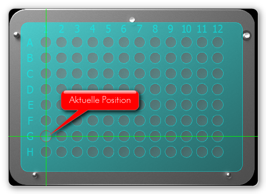
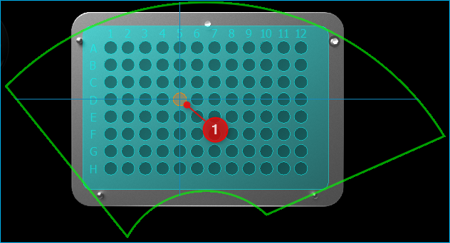
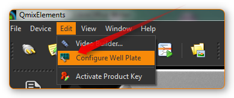
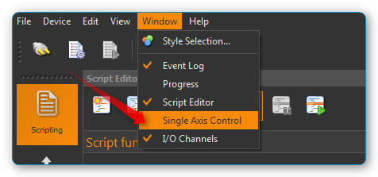
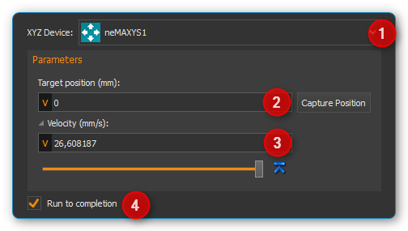
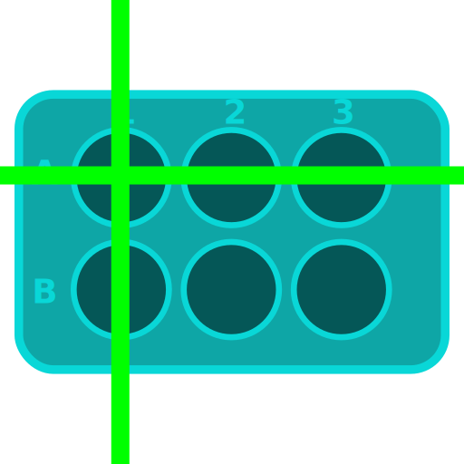

Rotaxys / Nemaxys Plugins
Einführung
Diese Plugins unterstützen die Steuerung und Visualisierung verschiedener CETONI-Positionierungssysteme wie Rotaxys- und Nemaxys-Geräte. Für jedes Gerät wird ein View erstellt, der alle UI-Elemente zur manuellen Steuerung eines einzelnen Geräts bereitstellt (siehe Abbildung unten).
Sie können eine Ansicht (View) für ein bestimmtes Gerät über den Hauptmenüpunkt oder oder über die entsprechenden Schaltflächen in der Anwendung Sidebar (Seitenleiste) anzeigen.
Eine solcher View besteht hauptsächlich aus den folgenden Komponenten:
Werkzeugleiste
Positionierkarte für XY-Positionierung
Steuerkreuz für manuelle Positionierung
Z-Panel für die Positionierung der Z-Achse (Hubachse)
Seitenleiste
Statusleiste
Seitenleiste
In der Seitenleiste, die ein- und ausgeblendet werden kann, finden Sie zusätzliche Steuerelemente zur Konfiguration und Steuerung Ihres Positioniersystems. So können Sie z.B. im Bereich Velocities (siehe Abbildung) die Geschwindigkeiten aller Achsen frei konfigurieren. Alle Positionierungen in der Positionierkarte oder im Z-Panel werden dann mit den eingestellten Geschwindigkeiten durchgeführt.
Werkzeugleiste
|
Blendet die Seitenleiste mit zusätzlichen Konfigurations- und Steuerelementen ein oder aus |
|
Ändert die Vergrößerung der Positionierkarte so, dass die Anzeige vollständig in den Arbeitsbereich passt |
|
Ändert die Vergrößerung der Positionierkarte auf die tatsächliche Pixelgröße |
|
Erhöht den Vergrößerungsfaktor |
|
Verringert den Vergrößerungsfaktor |
Schaltet zwischen freier Positionierung und Container-Positionierung um (siehe Abschnitt Positionierkarte ) |
|
|
Fügt die Skriptfunktion Move XY mit der aktuellen XY-Position als Zielposition zum Skript Editor hinzu |
Fügt die Skriptfunktion Move Z mit der aktuellen Position der Z-Achse als Zielposition zum Skript Editor hinzu. |
|
|
Stoppt sofort die Bewegungen aller Achsen des Positioniersystems |
|
Aktiviert/deaktiviert den Sicherheitshub. Ist dieser aktiv, fährt die Z-Achse vor jeder Positionierung in der XY Ebene in eine sichere Position. |
|
Legt die aktuelle Position der Z-Achse als sichere Position fest. Ist die Sicherheitshebefunktion aktiv, fährt das Positioniersystem vor jeder Bewegung in der XY-Ebene auf diese Höhe. |
|
Nullwinkel konfigurieren – der Nullwinkel wird vom Achssystem nicht überfahren und ist der Anfangs- und Endpunkt des 360°-Drehbereichs |
|
Find Home - Führt eine Referenzfahrt aus, um die Ausgangsposition des Geräts zu finden. |
Steuerkreuz
Rotaxys Steuerkreuz
Mit dem 6-Wege-Steuerkreuz können Sie alle Achsen des Rotaxys Positioniersystems manuell positionieren.
Rotationsachse entgegen dem Uhrzeigersinn drehen |
|
|
Rotationsachse im Uhrzeigersinn drehen |
Radiusachse vom Drehzentrum weg bewegen (Radius vergrößern) |
|
|
Radiusachse Richtung Drehzentrum bewegen (Radius verringern) |
|
Hubachse nach oben oder unten bewegen |


Nemaxys Steuerkreuz
Mit dem 6-Wege-Steuerkreuz können Sie alle Achsen des Nemaxys Positioniersystems manuell positionieren.
X-Achse nach links bewegen |
|
|
X-Achse nach rechts bewegen |
|
Y-Achse zur Rückseite des Gerätes bewegen |
Y-Achse zur Vorderseite des Gerätes bewegen |
|
Z-Achse nach oben oder unten bewegen |


Geschwindigkeit verändern
Bei der Auswahl einer Richtung auf dem Steuerkreuz, wird die entsprechende Achse mit einer festen Geschwindigkeit positioniert. Diese Geschwindigkeit kann durch das gleichzeitige Drücken einer Taste auf der Tastatur verändert werden. Drücken Sie dafür zuerst die Taste auf der Tastatur und klicken Sie anschließend auf eine Richtungstaste im Steuerkreuz.
Die folgen Tasten können verwendet werden:
|
Shift key Increases the velocity by a fixed factor |
Control key Decreases the velocity be a fixed factor for precise, fine positioning |

Achtung
Gefahr von Beschädigung durch Kollision mit Probenbehälter! Achten Sie darauf, bei abgesenkter Werkzeugspitze, z.B. wenn sich eine Kanüle in einem Behälter befindet, keine Kollisionen durch Bewegung der Rotations- oder Linearachse zu verursachen.
Positionierkarte
Einführung zur Positionierkarte
Die Positionierungskarte ist eine Gesamtansicht der XY-Ebene Ihres Achsensystems. Sie zeigt den Verfahrbereich und die Arbeitsplatzkonfiguration Ihres Geräts.

Mit der Positionierkarte können Sie Ihr Achsensystem in der XY-Ebene positionieren, indem Sie Punkte auf der Positionierkarte anklicken. Die Vergrößerung der Karte kann über das Kontextmenü in festen Schritten verändert oder mit dem Mausrad stufenlos eingestellt werden.
Vergrößerungsfaktor erhöhen (hineinzoomen) |
|
|
Vergrößerungsfaktor verringern (heraus zoomen) |

Zur Navigation innerhalb der Positionierkarte können Sie ebenfalls die Maus verwenden. Sie können den aktuell sichtbaren Ausschnitt über die beiden Scrollbalken am rechten und unteren Rand der Karte verschieben. Alternativ können Sie auch die freie Mausnavigation aktivieren. Gehen Sie dafür wie folgt vor:
Klicken Sie mit der mittleren Maustaste in die Positionierkarte

Es wird nun ein Navigationskreuz eingeblendet und die freie Navigation wird aktiviert
Sie können nun durch verschieben der Maus den aktuell sichtbaren Ausschnitt in der Positionierkarte verschieben. Je weiter Sie den Mauszeiger von dem eingeblendeten Navigationskreuz weg bewegen, um so schneller wird die Karte verschoben.
Positioniermodi
Die Positionierkarte kann in zwei verschiedenen Modi verwendet werden:
freie Positionierung
Container-Positionierung
Zur Umschaltung zwischen den beiden Modi, verwenden Sie die Schaltfläche Positioning Map in der Werkzeugleiste oder im Kontextmenü der Positionierkarte. Die aktuelle Position des Rotaxys Gerätes wird auf der Positionierkarte durch ein grünes Kreuz angezeigt.
Wichtig
Um Kollisionen zu vermeiden, wird vor dem Anfahren einer Position die Hubachse stets automatisch in die oberste Position verfahren.
Freie Positionierung

Bei der freien Positionierung können Sie alle Positionen innerhalb eines erlaubten Bereiches ❹ anfahren. Der erlaubte Bereich ist durch eine grüne Umrandung gekennzeichnet (siehe Abbildung). Wenn Sie die Maus bewegen, wird die potentielle Zielposition ❶ durch ein Zielkreuz, das aus zwei gestrichelten Linien besteht, gekennzeichnet. Wenn Sie mit der linken Maustaste die Zielposition anklicken, verfährt das Positioniersystem zu der gewählten Position. Die Anzeige der aktuellen Position ❷ bewegt sich dann zur Zielposition ❸.
Container Positionierung
In diesem Modus, klicken Sie zur Positionierung einfach in einen der vorhandenen Container (Wells). Sobald Sie den Zielcontainer angeklickt haben, verfährt das System automatisch zum Mittelpunkt des gewählten Zielcontainers.
Der gewählte Zielcontainer wird durch eine farbliche Markierung gekennzeichnet.
Kontextmenü aufrufen
Klicken Sie mit der rechten Maustaste in die Positionierkarte, um das Kontextmenü aufzurufen.

Z-Panel für die Positionierung der Z-Achse

Das Z-Panel rechts neben der Positionierkarte zeigt Ihnen stets die aktuelle Position der Hubachse an und gibt Ihnen verschiedene Möglichkeiten zur Positionierung der Hub-Achse. Es besteht aus:
Schaltflächen für vordefinierte Positionen
numerische Höhenanzeige (Position Hubachse)
Slider zu Auswahl der Zielposition
grafische Höhenanzeige
Schaltfläche für vordefinierte Positionen
Die beiden Schaltflächen für das Heben und Senken ❶ erleichtern die schnelle Positionierung der Hubachse auf vorher von Ihnen definierte Maximal- und Minimal-Positionen. Wenn Sie eine der beiden Schaltflächen anklicken, verfährt die Hubachse mit der eingestellten Geschwindigkeit an die vorher für diese Schaltfläche definierte Position. Mit den beiden Schaltflächen legen Sie auch den Verfahrbereich fest, der mit dem Positionsslider ❸ ausgewählt werden kann.
Um die aktuelle Position zuzuweisen, klicken Sie auf eine der beiden Schaltflächen mit der rechten Maustaste und wählen Sie dann im Kontextmenü den Punkt .

Die zugewiesene Position wird in den Konfigurationsdaten gespeichert und ist auch beim erneuten Start der Software wieder vorhanden. Der konfigurierte Verfahrbereich mit maximaler und minimaler Position wird Ihnen in der grafischen Höhenanzeige durch zwei blaue Markierungen angezeigt (siehe Abschnitt Höhenanzeige).
Höhenanzeige
Die numerische Höhenanzeige zeigt Ihnen die aktuelle Höhe der Achse in Millimetern an. Die grafische Anzeige stellt in einem Balken die aktuelle Position innerhalb des Verfahrbereichs der Achse dar.

Aktuelle Position / Höhe – der farbige Balken zeigt die aktuelle Position der Achse
Softwarelimit Maximum – zeigt die maximale Position, die Sie mit dem Slider auswählen können. Im Abschnitt Schaltfläche für vordefinierte Positionen ist beschrieben, wie Sie das Limit festlegen.
Softwarelimit Minimum – zeigt die minimale Position, die Sie mit dem Slider auswählen können
Zielauswahl-Markierung – zeigt die potentielle Zielposition, die per Mausklick zur Zielposition wird. Den Wert für diese Position wird im Hinweisfenster neben der Markierung angezeigt
Zielposition – wenn Sie mit der Maus in die Höhenanzeige klicken, wird eine neue Zielposition festgelegt und die Achse verfährt an diese Position. Die neue Zielposition kann nur innerhalb der Softwarelimits liegen. Klicken Sie außerhalb der Limits, verfährt die Achse bis zum entsprechenden Limit.
Sichere Position für XY-Bewegung – zeigt für bestimmte Achssysteme (z.B. Rotaxys) die sichere Position für XY-Bewegungen an. D.h. wenn die Achse tiefer steht als diese Position, wird vor einer XY-Bewegung die Achse auf diese Höhe verfahren.
Statusleiste
In Statusleiste des Rotaxys / Nemaxys Arbeitsbereiches können Sie stets die aktuelle XY-Position und den aktuellen Status des Gerätes ablesen.
Sicherheitshub

Sie können über diese Schaltfläche in der Werkzeugleiste den Sicherheitshub ein- und ausschalten. Ist der Sicherheitshub aktiv, fährt die Z-Achse vor jeder XY-Positionierung auf eine vorgegebene Sicherheitshöhe. Dies verhindert Kollisionen mit Probengefäßen oder anderen Gegenständen auf dem Arbeitstisch.

Durch Drücken dieser Schaltfläche definieren Sie die aktuelle Position der Z-Achse als sichere Höhe. Wenn der Sicherheitshub aktiv ist, wird das Achssystem vor jeder XY-Positionierung automatisch auf diese Höhe fahren.
Mikrotiterplatte konfigurieren (Rotaxys)
Einführung
Wichtig
Diese Funktion ist nur für Rotaxys-Geräte verfügbar. Wenn Sie ein Nemaxys- oder Rotaxys 360-Gerät haben, überspringen Sie diesen Abschnitt.
In der Positionierkarte wird stets die aktuell konfigurierte Mikrotiterplatte angezeigt. Sie können in der Software neue Platten konfigurieren und einem Rotaxys Gerät zuweisen. Wählen Sie dafür im Hauptmenü den Punkt (siehe Abbildung unten).
Es wird Ihnen nun der Konfigurationsdialog für Mikrotiterplatten angezeigt. Dieser Konfigurationsdialog ist wie folgt aufgebaut:
Liste der erstellten Mikrotiterplatten
Konfigurationsparameter der aktuellen Platte
grafische Darstellung der aktuellen Platte
Vorhandene Mikrotiterplatte auswählen
Wenn die Liste der vorhandenen Platten ❶ bereits eine passende Mikrotiterplatte enthält, wählen Sie diese einfach durch Anklicken aus und bestätigen Sie die Auswahl durch Anklicken der OK-Schaltfläche im Dialog.

Neue Mikrotiterplatte erstellen
Um ein neue Mikrotiterplatte zu erstellen, führen Sie die folgenden Schritte durch:
Konfigurieren Sie im Bereich Well plate geometry ❷ die Geometrie der Wellplatte. Sie konfigurieren die Anzahl der Zeilen Rows und Spalten Columns und den Abstand zwischen den Zeilen Row Spacing und Spalten Column Spacing. Diese Daten finden Sie im Datenblatt der Mikrotiterplatte.
Als nächstes konfigurieren Sie die Geometrie der Kavitäten im Bereich Cavity geometry. Legen Sie hier die Größe der Kavitäten fest Cavity Size sowie deren Tiefe Cavity Height. Mit dem Auswahlfeld Circular Cavities legen Sie fest, ob die neue Platte runde oder quadratische Kavitäten haben soll.
Bestimmen Sie abschließend die Farbe der neuen Platte. Wählen Sie dafür im Farbauswahlfeld Color die gewünschte Farbe. Sollte die passende Farbe nicht vorhanden sein, wählen Sie den Eintrag More…. Es wird dann ein Farbauswahldialog zur freien Farbwahl angezeigt (siehe Abbildung unten).

Klicken Sie nun auf die Schaltfläche Add Well Plate, um die neue Mikrotiterplatte der Liste hinzuzufügen. In dem Eingabedialog der nun angezeigt wird, müssen Sie einen eindeutigen Namen für die neue Platte vergeben. Drücken Sie nun Enter oder klicken Sie OK
Die neue Platte wird nun der Liste hinzugefügt und kann von Ihnen ausgewählt werden.
Rotaxys360 Arbeitstisch konfigurieren
Tipp
Diese Funktion ist nur für Rotaxys 360 Geräte verfügbar. Wenn Sie ein Nemaxys oder Rotaxys-Gerät besitzen, können Sie diesen Abschnitt überspringen.
Arbeitstisch-Konfiguration laden
Für das Rotaxys 360 Positioniersystem können im Moment die einzelnen Mikrotiterplatten noch nicht vom Anwender konfiguriert werden, wie beim Rotaxys Positioniersystem. Das Rotaxys 360 Positioniersystem unterstützt aber das Laden von vorgefertigten Arbeitstisch-Konfigurationsdateien, in denen die gesamte Konfiguration eines bestimmten Arbeitstisches beschrieben ist.
Um eine Arbeitstisch-Konfiguration zu laden, blenden Sie sich die Oberfläche des entsprechenden Rotaxys 360 Gerätes ein. Wählen Sie dann im Hauptmenü den Punkt .

Wählen Sie dann in dem Dateiauswahldialog der angezeigt wird die Konfigurationsdatei für den Arbeitstisch aus und laden Sie diese. Die Anzeige des Arbeitstisches wird dann sofort auf die neue Konfiguration aktualisiert (siehe Abbildung Beispielkonfiguration).

Standard Arbeitstisch wiederherstellen
Wählen Sie zum Wiederherstellen des Standard-Arbeitstisches im Hauptmenü den Punkt .

Nullwinkel konfigurieren (Rotaxys 360)
Das Rotaxys360 Achssystem verfügt über einen Drehbereich, der theoretisch größer als 360 Grad ist. Um ein Verwickeln und Verfitzen des Schlauches für die Fluiddosierung zu verhindern, wurde der Drehbereich auf 360° begrenzt.

Mit dem Nullwinkel konfigurieren Sie den Winkel, der vom Positioniersystem nie überfahren wird. Der Nullwinkel ist gleichzeitig der Start- und Endpunkt für den Drehbereich. Wenn der Nullwinkel genau zwischen zwei Probenbehältern liegt, die Sie prozessieren möchten, wird das Positioniersystem den längeren Weg in die entgegengesetzte Richtung wählen, um den Nullwinkel nicht zu überfahren.

Sie können den Nullwinkel an eine anderen Winkelposition verschieben, um dieses Problem zu umgehen. Drücken Sie dafür die Schaltfläche zur Konfiguration des Nullwinkels.
|
|


In dem Dialog der Ihnen nun angezeigt wird (siehe Abbildung oben), können Sie den Nullwinkel im Bereich von 0 – 360° frei einstellen.
Positionierung mit dem SpaceMouse

Die SpaceMouse ist ein intuitives Eingabegerät, welches Ihnen die Steuerung von allen Achsen (Rotationsachse, Radius-Achse und Hubachse) gleichzeitig ermöglicht. Um die SpaceMouse zu nutzen, schließen Sie diese an einen freien USB-Anschluss an Ihrem PC an. Aktuelle Treiber finden Sie auf unserer Internetseite:
https://cetoni.de/software-downloads/
oder auf dem Datenträger (CD oder USB-Stick) den Sie beim Kauf der Software erhalten haben. Installieren Sie den Treiber, um die SpaceMouse nutzen zu können.

Positionieren Sie die SpaceMouse so, dass das Verbindungskabel von Ihnen weg zeigt und der 3D Connexion-Schriftzug von Ihnen aus lesbar ist.
Rotaxys mit SpaceMouse positionieren
Übersicht
|
Rotationsachse im Uhrzeigersinn oder entgegen dem Uhrzeigersinn rotieren |
|
Radiusachse zum Außenradius oder zum Drehzentrum bewegen |
|
Hubachse nach oben oder unten bewegen |


Wichtig
Benutzen Sie die SpaceMouse nicht, wenn die Software das System verfährt (z.B. bei aktiver Scriptausführung), um die Verfahrbewegungen nicht zu unterbrechen.
Rotationsachse positionieren
Um die Rotationsachse zu positionieren, drehen Sie das Steuerelement im Uhrzeigersinn oder entgegen dem Uhrzeigersinn.

Die Geschwindigkeit, mit der die Achsen verfahren werden, kontrollieren Sie durch die Stärke der Auslenkung des Bedienteils. D.h. je stärker Sie das Bedienelement in eine bestimmte Richtung drücken oder drehen, umso schneller bewegt sich das Verfahrsystem. So können Sie durch eine geringe Auslenkung des Bedienteils sehr fein und gezielt positionieren.
Tipp
Je stärker Sie das Bedienteil auslenken, um so höher sind die Verfahrgeschwindigkeiten der Achsen.
Radiusachse positionieren
Zum Verfahren der Radius-Achse schieben Sie das Bedienteil des Space Navigators nach vorn oder hinten. Um die Radius-Achse zum Außenradius zu bewegen, drücken Sie das Bedienelement nach vorn von sich weg. Um die Radius-Achse zum Zentrum der Rotationsachse zu verfahren, ziehen Sie das Bedienelement zu sich heran.

Hubachse positionieren
Um die Z-Achse zu positionieren, drücken Sie das Bedienelement nach unten oder ziehen Sie das Bedienelement nach oben. Die Z-Achse wird in die Richtung bewegt, in die Sie das Bedienelement der SpaceMouse bewegen.

Nemaxys mit SpaceMouse positionieren
Übersicht
|
X-Achse nach links oder rechts bewegen |
|
Y-Achse nach vorn (in Richtung Anwender) oder nach hinten bewegen |
|
Positioning vertical Z-axis |

{kind=link}
{kind=link}
{kind=link}
{kind=link}
{kind=link}
{kind=link}
{kind=link}
{kind=link}
{kind=link}
Wichtig
Benutzen Sie die SpaceMouse nicht, wenn die Software das System verfährt (z.B. bei aktiver Scriptausführung), um die Verfahrbewegungen nicht zu unterbrechen.
X-Achse positionieren
Um die Bewegung der X-Achse zu steuern, schieben Sie das Bedienelement des Space Navigators in die gewünschte Richtung. Schieben Sie den Regler nach links, um die X-Achse nach links zu bewegen, und nach rechts, um die Achse nach rechts zu bewegen.

Die Geschwindigkeit, mit der die Achsen verfahren werden, kontrollieren Sie durch die Stärke der Auslenkung des Bedienteils. D.h. je stärker Sie das Bedienelement in eine bestimmte Richtung drücken oder drehen, umso schneller bewegt sich das Verfahrsystem. So können Sie durch eine geringe Auslenkung des Bedienteils sehr fein und gezielt positionieren.
Tipp
Je stärker Sie das Bedienteil auslenken, um so höher sind die Verfahrgeschwindigkeiten der Achsen.
Y-Achse positionieren
Um die Y-Achse zu verfahren, ziehen Sie das Bedienelement zu sich heran oder schieben Sie das von sich weg. Entsprechend der Auslenkung des Bedienelementes verfährt die Y-Achse zur Geräterückseite oder nach vorn in Ihre Richtung.
Tipp
Sie können beide Richtungen gleichzeitig steuern, wenn Sie den Controller vorwärts oder rückwärts und gleichzeitig nach links oder rechts bewegen.
Hubachse positionieren
Um die Z-Achse zu positionieren, drücken Sie das Bedienelement nach unten oder ziehen Sie das Bedienelement nach oben. Die Z-Achse wird in die Richtung bewegt, in die Sie das Bedienelement der SpaceMouse bewegen.
Steuerung von einzelnen Achsen
Zusätzlich zur Steuerung von Achssystemen, können auch einzelne Achsen manuell gesteuert werden. Dies kann notwendig sein, wenn Ihr Achssystem über zusätzliche Werkzeugachsen verfügt (z.B. zweite Z-Achse oder Rotationsachse) die nicht Bestandteil der XYZ-Steuerung sind.
Das Fenster zur Steuerung der Einzelachsen können Sie über den Menüpunkt im Hauptmenü der Anwendung einblenden (Abbildung unten).
Tipp
Das Fenster zur Steuerung der Einzalachsen ist ein Werkzeugfenster und kann frei in der Anwendung platziert und in allen vier Seitenbereichen angedockt werden.
Im Fenster zur Steuerung der Einzalachsen stehen Ihnen folgende Bedienelemente zur Verfügung:
Auswahlfeld Axis Device zur Auswahl der Einzelachse, die Sie steuern möchten.
Im Bereich Position wird Ihnen die aktuelle Position im Bereich zwischen Minimal- und Maximalposition als Fortschrittsbalken angezeigt. Über die Plus- / Minustasten können Sie die ausgewählte Achse verfahren. Die Verfahrbewegung dauert solange an, wie die entsprechende Schaltfläche gedrückt ist.

Im Bereich Velocity können Sie die Geschwindigkeit für die Verfahrbewegung einstellen.
Tipp
Mit der Scriptfunktion Einzelachse verfahren können Sie einzelne Achsen aus einem Script-Programm heraus steuern.
Weitere Funktionen
Achssystem kalibrieren
Wenn der Verfahrweg einer Achse blockiert ist (z.B. im Fall einer Kollision) kann es dazu kommen, dass die Schrittmotoren in dem Gerät Schritte “verlieren”, so dass die Positionswerte nicht mehr korrekt angezeigt werden. In diesem Fall ist es notwendig, eine Kalibrierung des Achssystems durchzuführen. Zum Start der Kalibrierung wählen Sie im Hauptmenü den Punkt (siehe Abbildung unten). Wenn Sie ein Nemaxys System haben, erreichen Sie die Kalibrierung über .

Script Funktionen zum Positionieren
Das Plugin bietet eine Reihe von Skriptfunktionen, die für die Integration der CETONI-Positionierungssysteme in das Skripting-System CETONI Elements erforderlich sind. Die folgenden Skriptfunktionen sind verfügbar:

Funktion XY Bewegung - Move XY

Diese Funktion dient dazu, das ein Achssystem in einem Qmix Script in der XY-Ebene zu positionieren. Das Achssystem ❶, und die Zielposition (X- und Y- Position) ❷ können Sie im Konfigurationsbereich dieser Funktion eingeben . Alternativ können Sie auch das Achssystem manuell an eine bestimmte Position verfahren (z.B. mit der Positionierkarte - siehe Abschnitt Positionierkarte) und dann mit der Schaltfläche Capture Actual Position der Scriptfunktion die aktuellen Positionswerte zuweisen.
Wenn Sie keine weiteren Einstellungen vornehmen, erfolgen alle Positionierungen mit der maximal möglichen Geschwindigkeit. Wenn Sie eigene Geschwindigkeiten eingeben möchten, blenden Sie durch Anklicken von Axis Velocities die Bedienelemente zur Eingabe der Geschwindigkeiten ein ❸. Hier können Sie nun für jede Achse die Geschwindigkeit der Positionierung einstellen.
Mit dem Auswahlfeld Run to completion ❹ legen Sie fest, ob nach dem Start des Positioniervorganges:
sofort mit der Bearbeitung der nächsten Scriptfunktion begonnen wird (Run to completion inaktiv)
oder ob die nächste Funktion erst aufgerufen wird, wenn die Zielposition erreicht wurde (Run to completion aktiv).
Funktion Hubbewegung - Move Z

Mit dieser Funktion kann die Hubachse (Z-Achse) eines Achssystems positioniert werden. Das Achssystem ❶, und die Positionsparameter (Z-Position ❷ und Geschwindigkeit ❸) können Sie im Konfigurationsbereich dieser Funktion eingeben. Alternativ können Sie auch die Z-Achse manuell an eine bestimmte Position verfahren (z.B. mit dem Z-Panel - siehe Abschnitt Z-Panel für die Positionierung der Z-Achse ) und dann mit der Schaltfläche Capture Actual Position der Scriptfunktion die aktuellen Z-Position zuweisen.
Wenn Sie keine weiteren Einstellungen vornehmen, erfolgen alle Positionierungen mit der maximal möglichen Geschwindigkeit. Wenn Sie eigene Geschwindigkeiten eingeben möchten, blenden Sie durch Anklicken von Velocity ❸ die Bedienelemente zur Eingabe der Geschwindigkeiten ein. Ein erneuter Klick auf dieses Element, blendet die Eingabefelder für die Geschwindigkeit wieder aus.
Mit dem Auswahlfeld Run to completion ❹ legen Sie fest, ob nach dem Start des Positioniervorganges:
sofort mit der Bearbeitung der nächsten Scriptfunktion begonnen wird (Run to completion inaktiv)
oder ob die nächste Funktion erst aufgerufen wird, wenn die Zielposition erreicht wurde (Run to completion aktiv).
Tipp
Wenn Run to completion nicht aktiviert ist, können Sie mehrere Achsen gleichzeitig verfahren. Sie können z.B. mit der Positionierung des XY-Systems beginnen, und während die XY-Achsen verfahren werden, können Sie die Positionierung mit der Z-Achse durchführen.
Wichtig
Die Eingabefelder zur Konfiguration der Geschwindigkeiten sind standardmäßig ausgeblendet und müssen erst durch das Anklicken von Velocity eingeblendet werden.
Funktion Referenzfahrt – Find Home

Diese Funktion ermöglicht den Start einer Referenzfahrt aus dem Script heraus. Das Positioniersystem fährt zu seiner Referenzposition und initialisiert sein Wegmessystem neu. Mit dem Run to Completion-Parameter können Sie wählen, ob die Funktion beendet werden soll nach dem Start der Referenzfahrt oder erst wenn die Referenzfahrt abgeschlossen ist.
Funktion Einzelachse verfahren - Move Axis
{kind=link}
Mit dieser Funktion kann eine Einzelachse positioniert werden. Im Auswahlfeld Axis device ❶ wählen Sie die Achse aus, die verfahren werden soll. Die Positionsparameter (Position ❷ und Geschwindigkeit ❸) können Sie im Konfigurationsbereich dieser Funktion eingeben. Alternativ können Sie auch die Achse manuell an eine bestimmte Position verfahren (z.B. mit dem Bedienpanel zur Einzelachssteuerung - siehe Abschnitt Steuerung von einzelnen Achsen) und dann mit der Schaltfläche Capture Position der Scriptfunktion die aktuellen Position zuweisen.

Wenn Sie keine weiteren Einstellungen vornehmen, erfolgen alle Positionierungen mit der maximal möglichen Geschwindigkeit. Wenn Sie eigene Geschwindigkeiten eingeben möchten, blenden Sie durch Anklicken von Velocity die Bedienelemente zur Eingabe der Geschwindigkeiten ❸ ein. Ein erneuter Klick auf dieses Element, blendet die Eingabefelder für die Geschwindigkeit wieder aus.
Mit dem Auswahlfeld Run to completion ❹ legen Sie fest, ob nach dem Start des Positioniervorganges:
sofort mit der Bearbeitung der nächsten Scriptfunktion begonnen wird (Run to completion inaktiv)
oder ob die nächste Funktion erst aufgerufen wird, wenn die Zielposition erreicht wurde (Run to completion aktiv).
Wichtig
Die Eingabefelder zur Konfiguration der Geschwindigkeiten sind standardmäßig ausgeblendet und müssen erst eingeblendet werden.
Funktion Zu Container verfahren – Move to container
{kind=link}
Diese Funktion dient dazu, ein Achssystem in der XY-Ebene zum Mittelpunkt eines bestimmten Containers (Becherglas, Fluidtank, Kavität einer Wellplatte) zu verfahren.
In der Auswahlbox XY Device (Abbildung unten – ❶) wählen Sie das Achssystem aus. Den Zielcontainer wählen Sie in der Auswahlbox ❷ aus. Falls der Container über mehrere Kavitäten verfügt (z.B. die Wells einer Wellplatte), geben Sie im Bereich ❸ die Spalte column und Zeile row der Kavität ein. Die Nummerierung erfolgt dabei von 0 beginnend. D.h. bei einer Wellplatte mit 12 Spalten und 8 Zeilen können Sie bei column Werte von 0 bis 11 und bei row Werte von 0 bis 7 eingeben. Bei Container mit nur einer Kavität (z.B. Becherglas) sind die Eingabefelder für Zeile und Spalte ausgegraut.*
Wenn Sie keine weiteren Einstellungen vornehmen, erfolgen alle Positionierungen mit der maximal möglichen Geschwindigkeit. Wenn Sie eigene Geschwindigkeiten eingeben möchten, blenden Sie durch Anklicken von Axis Velocities die Bedienelemente zur Eingabe der Geschwindigkeiten ein ❹. Hier können Sie nun für jede Achse die Geschwindigkeit der Positionierung einstellen.
Mit dem Auswahlfeld Run to completion ❺ legen Sie fest, ob nach dem Start des Positioniervorganges:
sofort mit der Bearbeitung der nächsten Scriptfunktion begonnen wird (Run to completion inaktiv)
oder ob die nächste Funktion erst aufgerufen wird, wenn die Zielposition erreicht wurde (Run to completion aktiv).
Tipp
Sie können in den Zeilen- und Spalteneingabefeldern Skriptvariablen verwenden. Auf diese Weise können Sie alle Kavitäten einer Kavitätenplatte in einer Schleife unter Verwendung der Schleifenzählervariablen verarbeiten.